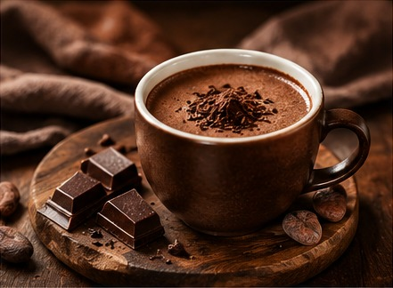

El cacao: origen de grandes sabores
El cacao es el ingrediente principal del chocolate y se utiliza en una gran variedad de preparaciones, desde bebidas calientes hasta tortas y pequeños bombones.
Su aroma intenso combina muy bien con frutas, frutos secos y otros ingredientes. Por eso, cada receta puede tener una personalidad diferente.
Un buen postre no solo se disfruta por su sabor, también por el momento especial que compartimos al probarlo.
Ver la galería